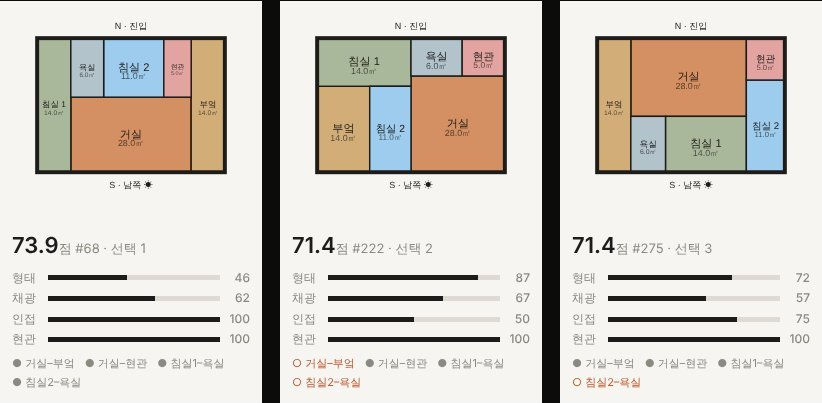

LAB — 설계 프로세스 실험 노트
EXP 08 · RUNNING 01 · UPDATED 2026.11.24
AI와 설계하기Design Process × AI — 단계마다 무엇을 맡기고, 무엇을 붙잡는가
설계는 조사에서 시작해 매스, 평면, 구조, 도면, 발표로 이어진다. 단계마다 반복과 계산은 AI에 맡기고, 판단에 쓰는 시간을 늘리는 방법을 정리했다. 기존 방식과 AI를 넣은 방식을 나란히 놓고, 일부 단계는 직접 조절해 볼 수 있는 실험을 붙였다.
권역 · 자료 조사Research
기존
검색과 답사로 자료를 모으고, 기사와 논문을 하나씩 읽어 엑셀로 정리한다. 공공데이터는 내려받아 손으로 가공한다.
AI와 함께
조사 질문부터 나눈다(인구, 교통, 용도지역, 역사, 사례). AI에게 출처가 달린 요약을 받고, 공공데이터 CSV는 AI가 짜 준 코드로 바로 차트와 지도로 만든다. 폴더나 브라우저를 MCP로 연결하면 AI가 자료를 직접 읽어 표로 정리한다.
사람의 몫 출처를 확인하는 일, 그리고 조사에서 무엇이 문제인지 정의하는 일.
예시 요청대상지 반경 1km의 연령별 인구, 대중교통 노선, 용도지역을 조사해 줘.
항목마다 출처 링크를 달고, 확실하지 않은 건 따로 표시해.
마지막에 이 지역의 문제 세 가지를 근거와 함께 정리해 줘.대지 분석Site analysis
기존
지형도를 캐드로 따고 등고선을 올려 모형을 만든다. 일조와 조망은 손으로 그려 본다.
AI와 함께
수치지형도나 DEM을 Grasshopper 지형 메시로 바꾸고, 경사 · 일조 시간 · 조망 분석 컴포넌트를 AI에게 받아 히트맵으로 본다. 조건이 바뀌어도 다시 돌리면 된다.
사람의 몫 어떤 조건을 볼지, 분석 결과 중 무엇을 설계 근거로 삼을지.
예시 요청Grasshopper Python 3 컴포넌트를 만들어 줘.
입력: 지형 Mesh, 태양 벡터 리스트, 격자 간격(m)
출력: 격자점, 점별 일조 시간, 색 입힌 Mesh
코드 맨 위에 입력 · 출력 설명과 버전을 적어 줘.프로그램 · 면적Program
기존
사례를 찾아 면적표를 엑셀로 만들고, 버블 다이어그램을 손으로 여러 번 그린다.
AI와 함께
사례 면적 비율로 면적표 초안을 받고, 실 사이 인접 관계를 표로 적으면 버블 다이어그램이 자동으로 배치된다. 면적이나 관계를 바꾸면 다이어그램이 바로 다시 그려진다.
사람의 몫 어떤 실이 붙어야 하는지에 대한 판단. 표의 숫자는 그 판단의 기록이다.
예시 요청주민센터 연면적 1,200㎡ 기준으로 실별 면적표 초안을 만들어 줘.
비슷한 사례 2~3개의 비율을 근거로 들고,
실 사이 인접 필요도(필수 · 권장 · 무관)를 표로 같이 줘.기초 매스Massing
기존
대안 서너 개를 모델링해 크리틱에서 고른다.
AI와 함께
용적률, 높이 제한, 일조 사선 같은 규칙을 파라미터로 만들고, 시드를 바꿔 매스 수십~수백 개를 뽑는다. 각 매스에 면적 · 일조 · 외피 면적 같은 지표 점수를 매겨 정렬한다.
사람의 몫 점수 기준을 정하는 일, 그리고 점수가 놓친 좋은 안을 알아보는 눈.
예시 요청대지 경계 Curve, 용적률, 최고 높이, 층고를 입력으로
매스 대안을 seed별로 만드는 컴포넌트를 짜 줘.
대안마다 연면적, 외피 면적, 남향 입면 비율을 출력해서 점수로 비교할 수 있게.평면 구성Plan layouts
기존
동선과 실 배치를 스케치로 여러 번 바꿔 보고, 마음에 드는 안을 고른다.
AI와 함께
실별 면적, 채광 요구, 인접 관계를 데이터로 넣고 가중치를 준다. 평면 대안을 수백 개 뽑아 점수를 매기고, 기준 점수를 넘으면서 서로 충분히 다른 안만 골라낸다. 아래 실험 카드에서 직접 돌려볼 수 있다.
사람의 몫 가중치를 정하는 일. 채광을 얼마나 중요하게 볼지는 설계자의 태도다.
예시 요청실 6개(이름, 면적, 채광 요구도)와 필수 인접 쌍을 입력으로
평면 대안 N개를 만들고 형태 · 채광 · 인접 점수를 매겨 줘.
기준 점수 이상이면서 서로 다른 안만 골라 보여 줘.
LAB 01 · 직접 돌려보기
평면 대안 생성기
실 6개의 면적 · 채광 · 인접 조건에 가중치를 주고, 평면 대안 수백 개 중 기준을 넘으면서 서로 다른 안만 골라낸다.
실험 열기 →구조 · 재료Structure & material
기존
부재를 하나씩 그리고, 물량은 따로 세어 표로 만든다.
AI와 함께
그리드, 기둥, 보, 패널을 규칙으로 생성하는 컴포넌트를 받는다. 부재 길이와 개수 같은 물량은 같은 정의에서 자동으로 뽑는다. 셸이나 막처럼 형태를 찾아야 하는 구조는 간단한 시뮬레이션 코드로 실험한다.
사람의 몫 재료가 실제로 어떻게 만들어지고 쌓이는지에 대한 이해.
예시 요청곡면 Surface를 입력으로 u, v 분할 수에 따라 격자 부재를 만들고
부재 길이별 개수표를 출력하는 컴포넌트를 짜 줘.
길이는 50mm 단위로 묶어서.도면 · 표현Drawings
기존
캐드 도면을 일러스트레이터에서 하나씩 꾸민다. 피드백이 오면 처음부터 다시 한다.
AI와 함께
선 두께, 해치, 레이어 규칙을 스크립트로 만들어 도면 전체에 한 번에 적용한다. 피드백이 오면 규칙만 고쳐 다시 그린다. 렌더 전에는 이미지 생성으로 분위기를 빠르게 스터디한다.
사람의 몫 "이 선이 너무 강하다" 같은 눈의 판단. 규칙은 그 판단을 반복하는 도구다.
예시 요청이 DWG에서 레이어 이름별로 선 두께와 색을 정리하는 규칙표를 만들고,
절단된 벽 레이어만 골라 포셰로 채우는 스크립트를 짜 줘.정리 · 발표Presentation
기존
패널과 PPT를 손으로 배치하고, 설명글은 마감 직전에 쓴다.
AI와 함께
설명글을 다듬고, 다이어그램을 코드로 그리고, 포트폴리오와 웹사이트를 만든다. 이 웹사이트도 같은 방식으로 만들었다.
사람의 몫 무엇을 보여 주고 무엇을 뺄지.
예시 요청이 프로젝트 설명을 300자로 줄여 줘.
과장된 표현은 빼고, 대지 · 문제 · 해법 순서로.